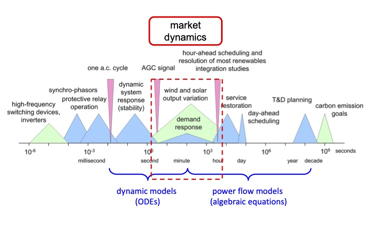
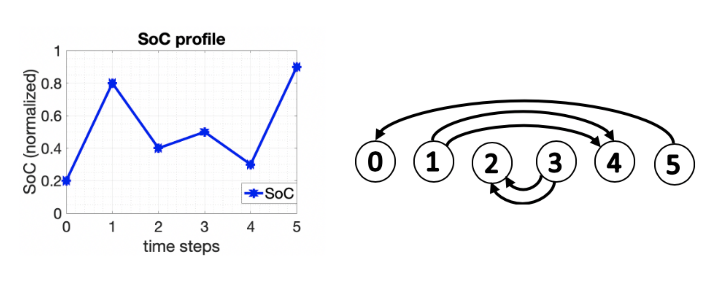
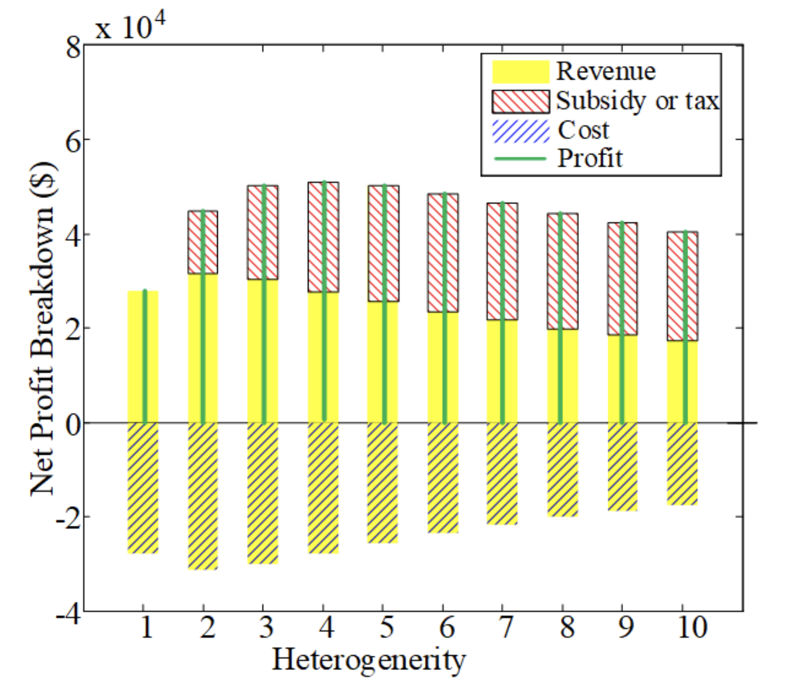
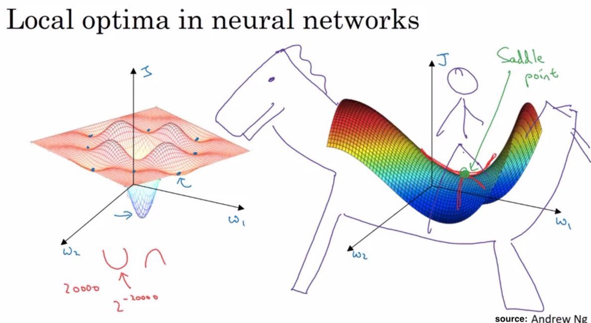
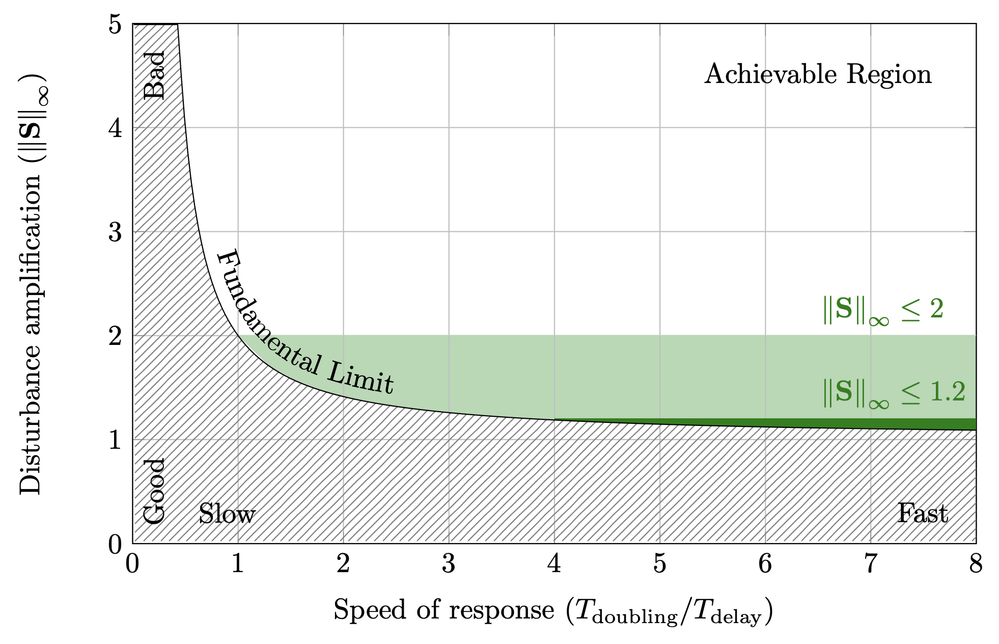
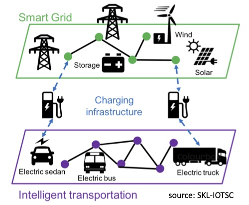

DESIRES Lab @ Peking University
Incentive Misalignment in Two-Stage Settlement Electricity Markets
 |
Deregulated markets are aimed at driving efficient trading with maximum surplus from a social standpoint, such that the economy appeals to investment and can prosper. In addition to spot markets where commodities are traded for immediate delivery, forward contracting is another crucial platform for transactions that target future delivery. It is co-designed to increase the efficiency of a marketplace by allowing participants to hedge risks and promoting trade, and has its application in a wide spectrum of markets, spanning finance, cloud computing, natural gas and electricity. Our research on such a system of two-stage sequential markets is motivated by electricity markets where as much as 95% of energy is traded through forward contracts. Therefore, any potential source of inefficiency in these market designs is likely to incur enormous social economic loss in the long run.
|
Physics-Driven Electricity Market Dynamics Design
|  | Electricity grids and markets cooperate to reliably trade and deliver power. The cooperation is a demanding task: a physical grid is bounded to Newton’s and Kirchhoff’s Laws and operates within specified operating regions, while a market pursues underlying efficiency but has to accommodate incentives of individual participants that are free to change their preferences. To prioritize reliability, the norm has been adopting an operational hierarchy across timescales: market economic dispatch spanning five-minute intervals or longer; and frequency regulation required to function within one minute or so. Such a paradigm is a compromise at best – a higher-frequency market approaches finer-granularity efficiency and better handles system variability, but might destabilize the grid. This tradeoff motivates our research on the system of grid and market that aims to explore the fundamental limit of how fast a market can be operated without jeopardizing grid reliability.
|
Storage Degradation Aware Electricity Market Design and Analysis
|  | Lithium-ion based battery storage is one of the fastest growing storage modalities for the power grid. However, in contrast with traditional generators, the cost of dispatching storage cannot be directly quantified in terms of supplied power alone. For example, degradation due to numerous charging and discharging half-cycles plays an important role in the operational cost associated with battery storage. However, these storage specific costs are not currently accounted for in market settlements and negatively affect the profitability of storage. The most widely used models for storage cost are cycle-based degradation that quantifies the cost of each half-cycle (i.e., charging or discharging) based on its depth. These models are generally combined with the Rainflow cycle counting algorithm, which extracts charging and discharging half-cycles from a storage State of Charge (SoC) profile.
|
Mechanism Design for Efficient Nash Equilibrium in Oligopolistic Markets
|  | Deregulated markets are designed to foster competition among participants by allowing them to bid freely, in the aim of driving efficient operation and investment. However, natural barriers to market entry and strategic dominance of existing participants often lead to oligopolistic markets that are not socially efficient in principle, e.g., electricity markets. There exists systematic loss of efficiency attributed to the strategic behavior of individual participants, which exploits the anticipation of their bidding impact to manipulate market clearing prices. Such ability to earn themselves extra benefits is referred to as market power in economics. There have been extensive efforts towards alleviating such loss of efficiency, from both academia and industry.
|
Saddle Flow Dynamics
|  | There has been increasing interest in studying optimization algorithms from a dynamical systems view-point as means to understand their stability, rate of convergence, and robustness. For example, in the basic case of gradient descent dynamics for unconstrained convex optimization, the objective function monotonically decreases along trajectories towards the optimum, naturally rendering a Lyapunov function. One prominent branch of this line of work is the study of saddle flow dynamics, i.e., dynamics in the gradient descent direction on a sub-set of variables and the gradient ascent direction on the rest. Designed for locating min-max saddle points, saddle flow dynamics are particularly suited for solving constrained optimization problems via primal-dual methods, and finding Nash equilibria of zero-sum games, which lead to a broad application spectrum, including power systems, communication networks, and cloud computing.
|
Fundamental Limits of Contact Tracing in Epidemic Control
|  | “The practical, physical (and sometimes dangerous) consequences of control must be respected, and the underlying principles must be clearly and well taught.” — Gunter Stein, Respect the Unstable The control of disease spread is not the traditional hunting ground of the control engineers, so a degree of caution from our community is perhaps of even greater relevance than normal. That said, controlling the spread of a disease has many of the elements of the most challenging control problems. Accurate models of the spread of a highly infectious disease are at best controversial, but certainly unstable (at least in a population with high susceptibility to the disease). The mechanisms for identifying infectious members of the population may be subject to significant delays and inaccuracies, compromising the quality of the available information for performing feedback. And finally, the options for mitigating the spread can be blunt, unpredictable, and subject to severe capacity constraints. |
Electric Vehicle Scheduling in Power and Transportation Networks
|  | The electricity and transportation sectors consume the most energy and emit the most greenhouse gases. For instance, they combine for approximately two thirds of energy consumption and over a half of greenhouse gas emission in the US. Power networks and transportation networks are therefore the most important engineering systems to manage towards energy efficiency and zero emission. The emergence of electric vehicles on the road and their tremendous demand to charge batteries on power networks further couple the two systems, adding to the complexity of operating them efficiently and reliably. However, scheduling of EVs also offers a unique opportunity to fully exploit the flexibility of both systems and coordinate with renewable integration to potentially eliminate emission.
|